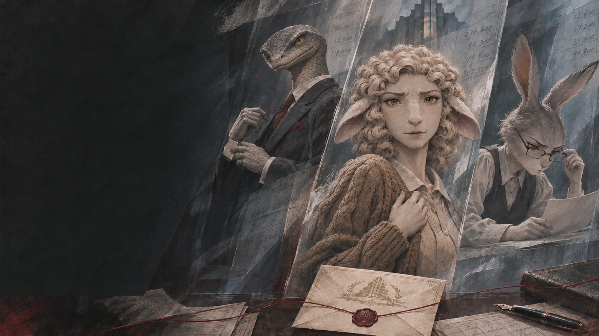
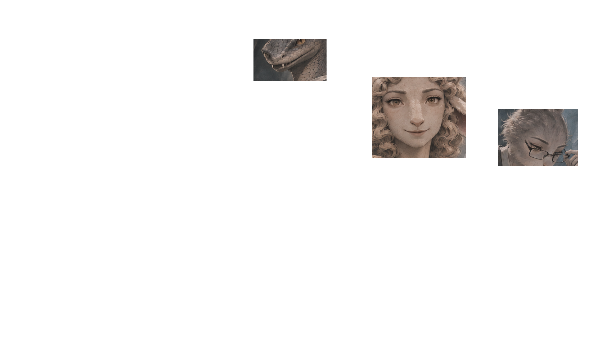

R.O.C · 罪案之歌 — Requiem of Crime
如若无背景音乐，请点击屏幕任意位置。


如若无背景音乐，请点击屏幕任意位置。
最开始构思这个作品，我们不想做一个简单没有创新的金融答题游戏，就想到把解谜剧情和消消乐结合在一起。通过不枯燥乏味的方式，有趣的消除卡牌搜集线索，再依靠答题一步步挖出"金鼎财富"背后的真相。在整个游戏里你可以反复尝试，答错题目或闯关失败都能重新来过，慢慢梳理整个骗局的套路。可现实不会给这么多次机会，类似庞氏骗局的案件真实发生过，不少人被高额回报的话术迷惑，最后积蓄付诸东流。
说回游戏，跟着故事走到最后你会发现，金鼎财富那些漂亮柜台、认购邀约、诱人的“稳盈计划”，也全都是假象。它拿新投资人的钱去填旧的窟窿，曾经轰动全国的 e 租宝，只用一年半，就把一百一十五万多人的积蓄卷走，留下三百八十多亿的损失。我们没有堆砌晦涩难懂的专业理论，借着这个虚构的金鼎财富故事，就是想把这类骗局的运作方式直观展现出来。希望你经历完这一整个故事后，再遇到保本高收益这类诱人的说辞时，可以多一份戒备心。最后，记住一句最简单的话：许诺保本又高收益的，大多都是陷阱。愿这场小小的冒险，能给你多一双分辨骗局的慧眼。
感谢你体验此游戏。
R.O.C
Darkest Child — Kevin MacLeod (incompetech.com)，依据 CC BY 4.0 许可使用。4月、5月使用放慢、降低音调及音量的版本。
以下配乐由 Scott Buckley 创作，依据 CC BY 4.0 许可使用。
游戏中对播放音量、速度、音调、淡入淡出与循环播放作了适配。结尾保留制作时提供的原音轨。
重新从邀请函开始。进入新一轮调查时，现有调查与资金记录将由新案件替换。